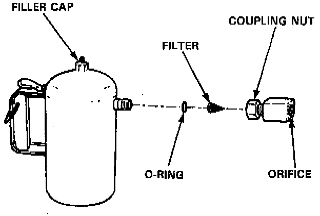

Transmission Cooler: Tools and Equipment

FLUSHING TOOL MAINTENANCE
1. Empty and rinse after each use. Fill the can with water and pressurize the can. Flush the discharge line to ensure that the unit is clean.
2. If discharge liquid does not foam, the orifice may be blocked.
3. To clean, disconnect the plumbing from the tank at the large coupling nut.
4. Remove the in-line filter from the discharge side and clean if necessary.
5. The fluid orifice is located behind the filter. Clean it with the pick stored in the bottom of the tank handle or blow it clean with air. Securely reassemble all parts.